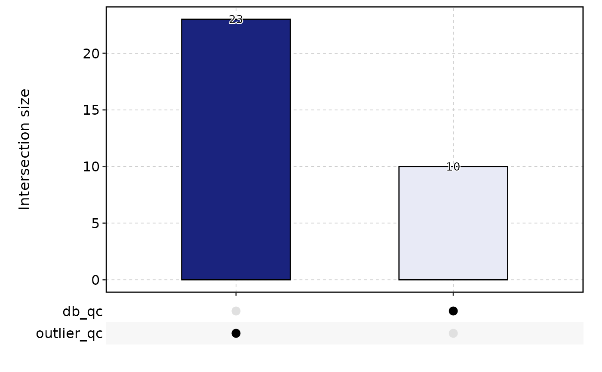

Cell-level quality control
Usage
RunCellQC(
srt,
assay = "RNA",
split.by = NULL,
group.by = NULL,
return_filtered = FALSE,
qc_metrics = c("doublets", "decontX", "atac", "outlier", "umi", "gene", "mito", "ribo",
"ribo_mito_ratio", "species"),
db_method = "scDblFinder",
db_rate = NULL,
db_coefficient = 0.01,
decontX_threshold = NULL,
decontX_batch = NULL,
decontX_background = NULL,
decontX_background_assay = NULL,
decontX_bg_batch = NULL,
decontX_assay_name = "decontXcounts",
decontX_store_assay = FALSE,
decontX_round_counts = TRUE,
decontX_args = list(),
atac_args = list(),
outlier_threshold = c("log10_nCount:lower:2.5", "log10_nCount:higher:5",
"log10_nFeature:lower:2.5", "log10_nFeature:higher:5", "featurecount_dist:lower:2.5"),
outlier_n = 1,
UMI_threshold = 3000,
gene_threshold = 1000,
mito_threshold = 20,
mito_pattern = c("MT-", "Mt-", "mt-"),
mito_gene = NULL,
ribo_threshold = 50,
ribo_pattern = c("RP[SL]\\d+\\w{0,1}\\d*$", "Rp[sl]\\d+\\w{0,1}\\d*$",
"rp[sl]\\d+\\w{0,1}\\d*$"),
ribo_gene = NULL,
ribo_mito_ratio_range = c(1, Inf),
species = NULL,
species_gene_prefix = NULL,
species_percent = 95,
seed = 11,
verbose = TRUE,
hb_range = c(0, 5),
hb_pattern = c("HB[^P]", "Hb[^p]", "hb[^p]"),
hb_gene = NULL,
qc_features = list()
)Arguments
- srt
A
Seuratobject.- assay
Assay used for doublet calling.
- split.by
Metadata column used to run QC separately per split, then merge.
- group.by, decontX_batch, decontX_background, decontX_background_assay, decontX_bg_batch
Passed to
RunDecontX()when"decontX"is inqc_metrics.- return_filtered
Return only cells that pass QC.
- qc_metrics
Metrics to apply:
"doublets","decontX","atac","outlier","umi","gene","mito","ribo","hb","ribo_mito_ratio","species", and any name inqc_features. Default for RNA isc("doublets", "decontX", "outlier", "umi", "gene", "mito", "ribo", "ribo_mito_ratio", "species"); forChromatinAssay,"atac".- db_method
Doublet method:
"scDblFinder","Scrublet","DoubletDetection","scds_cxds","scds_bcds", or"scds_hybrid". Labels are aggregated intodb_qcand do not change other thresholds.- db_rate
Expected doublet rate.
- db_coefficient
Doublet rate is
ncol(srt) / 1000 * db_coefficient.- decontX_threshold
Filter cells with
decontX_contaminationabove this value.NULLcomputes decontX without filtering.- decontX_assay_name, decontX_store_assay, decontX_round_counts
Store decontaminated counts from
RunDecontX().- decontX_args
Extra
RunDecontX()arguments. ExplicitdecontX_*parameters take precedence.- atac_args
Extra
RunATACQC()arguments. Thresholds labelatac_qc; filtering is done byRunCellQC().- outlier_threshold
Outlier rules as
"metric:tail:nmads".- outlier_n
Minimum number of outlier rules a cell must fail.
- UMI_threshold, gene_threshold
Keep cells with UMI/gene counts above these.
- mito_threshold, mito_pattern, mito_gene
Discard cells above this mitochondrial percentage.
mito_geneoverridesmito_pattern.- ribo_threshold, ribo_pattern, ribo_gene
Discard cells above this ribosomal percentage.
ribo_geneoverridesribo_pattern.- ribo_mito_ratio_range
Accepted ribosomal/mitochondrial ratio range.
- species, species_gene_prefix, species_percent
Species suffix for QC metrics (first is the species of interest) and minimum UMI percentage of that species.
- seed
Random seed.
- verbose
Whether to print messages.
- hb_range, hb_pattern, hb_gene
Hemoglobin percentage range and feature matching.
hb_geneoverrideshb_pattern.- qc_features
Named list of extra feature-percentage rules. Each rule needs exactly one of
featuresorpattern, plus a length-2range. Computespercent.<name>; filtering/<name>_qconly when<name>is inqc_metrics.
Examples
data(pancreas_sub)
pancreas_sub <- RunStandardWorkflow(pancreas_sub)
#> ℹ [2026-08-30 18:16:00] Start standard processing workflow...
#> ℹ [2026-08-30 18:16:00] Checking a list of <Seurat>...
#> ! [2026-08-30 18:16:00] Data 1/1 of the `srt_list` is "unknown"
#> Warning: Data 1/1 of the `srt_list` is "unknown"
#> ℹ [2026-08-30 18:16:00] Perform `NormalizeData()` with `normalization.method = 'LogNormalize'` on 1/1 of `srt_list`...
#> ℹ [2026-08-30 18:16:00] Perform `FindVariableFeatures()` on 1/1 of `srt_list`...
#> ℹ [2026-08-30 18:16:00] Use the separate HVF from `srt_list`
#> ℹ [2026-08-30 18:16:00] Number of available HVF: 2000
#> ℹ [2026-08-30 18:16:00] Finished check
#> ℹ [2026-08-30 18:16:00] Perform `ScaleData()`
#> ℹ [2026-08-30 18:16:00] Perform pca linear dimension reduction
#> ℹ [2026-08-30 18:16:01] Use stored estimated dimensions 1:23 for Standardpca
#> ℹ [2026-08-30 18:16:01] Perform `Seurat::FindClusters()` with `cluster_algorithm = 'louvain'` and `cluster_resolution = 0.6`
#> ℹ [2026-08-30 18:16:01] Reorder clusters...
#> ℹ [2026-08-30 18:16:01] Skip `log1p()` because `layer = data` is not "counts"
#> ℹ [2026-08-30 18:16:01] Perform umap nonlinear dimension reduction
#> ✔ [2026-08-30 18:16:11] Standard processing workflow completed
pancreas_sub <- RunCellQC(
pancreas_sub,
qc_metrics = c("umi", "gene", "example_set"),
qc_features = list(
example_set = list(
features = head(rownames(pancreas_sub), 5),
range = c(0, 0)
)
)
)
#> ◌ [2026-08-30 18:16:11] Running cell-level quality control
#> ℹ [2026-08-30 18:16:11] Data type is raw counts
#> ✔ [2026-08-30 18:16:11] ● Total cells: 1000
#> ✔ ◉ 849 cells remained
#> ✔ ◯ 151 cells filtered out:
#> ✔ ◯ 0 low-UMI cells
#> ✔ ◯ 0 low-gene cells
#> ✔ ◯ 151 example_set feature-QC outlier cells
head(pancreas_sub@meta.data[, c("percent.hb", "percent.example_set")])
#> percent.hb percent.example_set
#> AAACCTGAGCCTTGAT 0.00000000 0.01414227
#> AAACCTGGTAAGTGGC 0.00000000 0.00000000
#> AAACGGGAGATATGGT 0.01614466 0.00000000
#> AAACGGGCAAAGAATC 0.00000000 0.00000000
#> AAACGGGGTACAGTTC 0.01089087 0.00000000
#> AAACGGGTCAGCTCTC 0.00000000 0.00000000
# Hemoglobin expression can be biological signal in erythroid samples;
# include "hb" in qc_metrics only when HB-based filtering is appropriate.
CellStatPlot(
pancreas_sub,
stat.by = c(
"umi_qc", "gene_qc", "example_set_qc"
),
plot_type = "upset",
stat_level = "Fail"
)
#> ! [2026-08-30 18:16:11] `stat_type` is forcibly set to "count" when plot "sankey", "chord", "venn", and "upset"
#> Warning: `stat_type` is forcibly set to "count" when plot "sankey", "chord", "venn", and "upset"
#> `geom_line()`: Each group consists of only one observation.
#> ℹ Do you need to adjust the group aesthetic?
#> `geom_line()`: Each group consists of only one observation.
#> ℹ Do you need to adjust the group aesthetic?
